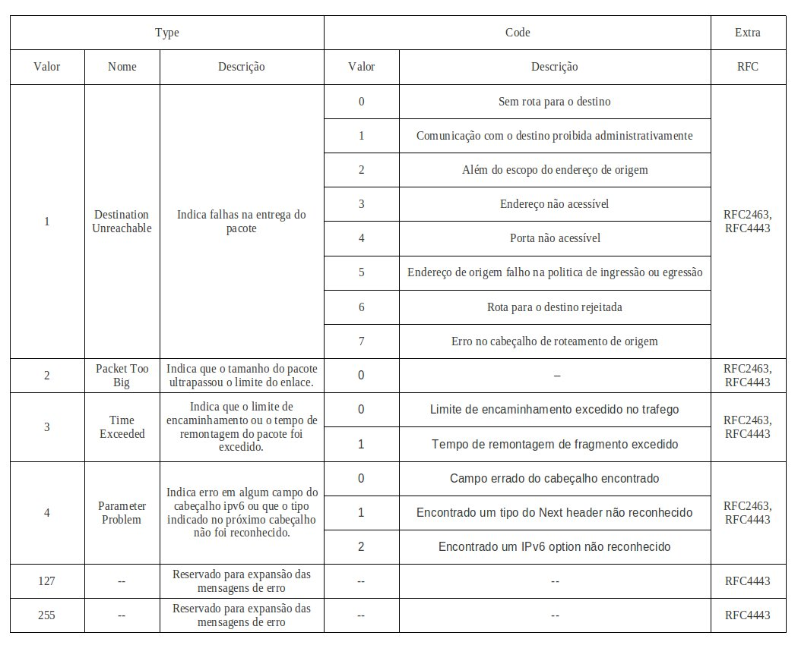
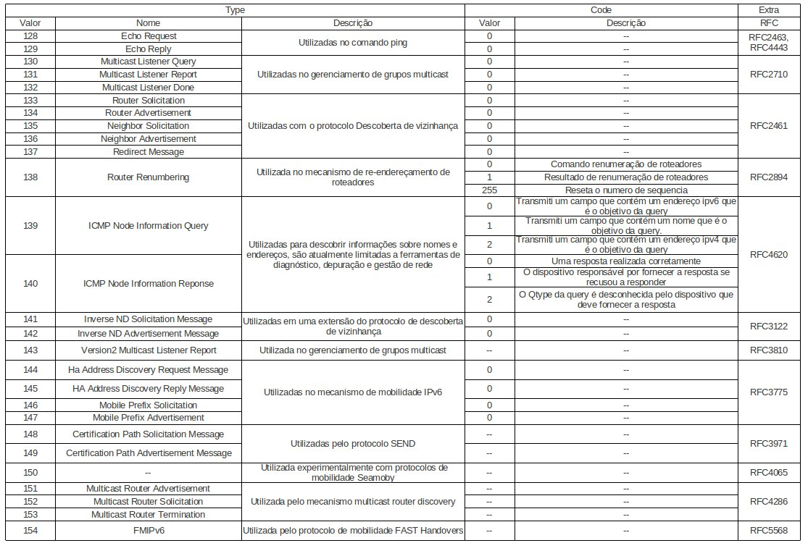

Introdução
- ICMPv6 (Internet Control Message Protocol)
- NDP (Neighbor Discovery Protocol)
ICMPv6 (Internet Control Message Protocol)
Os protocolos usados no IPv4, que não existem mais no IPv6, cujas funcionalidades foram agregadas pelo ICMPv6, são:
- ARP (Address Resolution Protocol), cujo o objetivo é mapear os endereços fisicos através do endereços lógicos.
- RARP (Reverse Address Resolution Protocol), que realiza o inverso do ARP, mapeando os endereços lógicos para endereços fisicos.
- IGMP (Internet Group Management Protocol), que atua com o gerenciamento de membros de grupos multicast.
- MLD (multicast Listener Discovery), que opera com o gerenciamento dos grupos multicast.
- NDP (Neighbor Discovery Protocol), que é responsável por identificar e conhecer caracteristicas da vizinhança.
- Path MTU discovery, que trabalha no processo de descoberta do menor MTU em comunicação entre dois nós.
- Mobility support, que cuida do gerenciamento de endereços de origem dos host dinamicamente.
- Autoconfiguração Stateless, que permite a aquisição de endereços globais sem o uso de DHCP.
O pacote ICMPv6 é identificado no cabeçalho IPv6 pelo valor 58 no campo chamado Next Header. Ele se localiza logo após os cabeçalho base do IPv6, se não existir cabeçalhos de extensão.
O ICMPv6 possui um cabeçalho de estrutura simples, baseado em quatro campos básicos:
- O campo Type de 8 bits: especifica o tipo da mensagem e assim determina o formato do corpo da mensagem (campo Data). Um exemplo de seu uso é o valor 2 que representa uma mensagem “Packet Too Big”.
- O campo Code de 8 bits: apresenta algumas informações adicionais sobre o motivo da mensagem. Um exemplo de seu uso seria para indicar a razão da falha de conexão entre dois dispositivos, numa mensagem “Destination Unreachable”. Neste caso o valor 0 representaria que não há rota para o destino.
- O campo Checksum de 16 bits: é utilizado para detectar dados corrompidos no cabeçalho ICMPv6 e em parte do cabeçalho IPv6.
- O campo Data: mostra as informações relativas ao tipo da mensagem, podendo ser desde diagnósticos de rede até erros. Seu tamanho é variável de acordo com a mensagem, desde que não exceda o tamanho de MTU mínimo do IPv6 (1280 bits).
Figura 2: Formato do Pacote ICMPv6
Classes
Devido o amplo conjunto de informações que podem ser transmitidas por meio dos pacotes ICMPv6, foram designadas duas classes para categorizar as mensagens: Erro e Informação. As duas tabelas a seguir mostram os tipos mensagens pertencentes a cada uma dessas classes.
Mensagens de Erro:

Mensagem de Informação:

Os tipos 100, 101, 200 e 201 são para uso experimental enquanto que os tipos do 102 até o 126 não são utilizados.
NDP (Neighbor Discovery Protocol)
O protocolo de descoberta de vizinhança foi desenvolvido sob a finalidade de resolver os problemas de interação entre nós vizinhos em uma rede. Para isso ele atua sobre dois aspectos primordiais na comunicação IPv6, a autoconfiguração de nós e a transmissão de pacotes.
No caso da autoconfiguração de nós, o protocolo fornece suporte para a realização de três funcionalidades:
- Parameter Discovery: atua na descoberta por um nó de informações sobre o enlace (como MTU) e sobre a Internet(como hop limit).
- Address Autoconfiguration: trabalha com a autoconfiguração stateless de endereços nas interfaces de um nó.
- Duplicate Address Detection: utilizado para descobrir se o endereço que se deseja atribuir a uma interface já está sendo utilizado por um outro nó na rede.
Já no caso da transmissão de pacotes entre nós, o suporte é dado para a realização de seis funcionalidades:
- Router Discovery: trabalha com a descoberta de roteadores pertencentes ao enlace.
- Prefix Discovery: implementa a descoberta de prefixos de redes do enlace, cuja a finalidade é decidir para onde os pacotes serão direcionados numa comunicação (se é para um roteador especifico ou direto para um nó do enlace).
- Address Resolution: descobre o endereço fisico através de um endereço lógico IPv6.
- Neighbor Unreachability Detection: permite que os nós descubram se um vizinho é ou se continua alcançavel, uma vez que problemas podem acontecer tanto nos nós como na rede.
- Redirect: permite ao roteador informar ao nó uma rota melhor ao ser utilizada para enviar pacotes a determinado destino.
- Next-Hop Determination: algoritmo para mapear um endereço IP de destino em um endereço IP de um vizinho para onde o trafego deve ser enviado.
Mensagens
O protocolo NDP foi construido com base nas mensagens do protocolo ICMPv6 para a realização de suas tarefas. Para isso foram reservadas 5 tipos de mensagens:
- Router Solicitation (RS), tipo 133.
- Router Advertisement (RA), tipo 134.
- Neighbor Solicitation (NS), tipo 135.
- Neighbor Advertisement (NA), tipo 136.
- Redirect, tipo 137.
A seguir serão detalhadas cada uma dessas mensagens com suas respectivas informações.
2.1.1. Router Solicitation
A mensagem Router Solicitation é enviada por um dispositivo para requisitar aos roteadores o envio de mensagens Router Advertisement.
Sua importância provém da necessidade da descoberta imediata, por um nó, de informações (como rotas, MTU, Hop Limit e outras) que estão dispostas no roteador. De tempos em tempos o roteador envia a todos os nós do enlace esses dados, contudo, esse intervalo pode ser muito longo impedindo o nó de estabelecer alguma comunicação. Portanto, essa mensagem serve para solicitar ao roteador que responda rapidamente o pedido do dispositivo. Geralmente essa situação acontece quando uma máquina tenta se conectar ou reconectar a rede (ou seja, no momento em que ele habilita sua interface) e por isso desconhece qualquer detalhe das configurações do enlace e da Internet.
2.1.2. Router Advertisement
A mensagem Router Advertisement é enviada periodicamente ou em resposta à mensagem Router Solicitation por um roteador para anunciar sua presença no enlace.
Sua importância provém do caráter informativo dessa mensagem. Além de anunciar o roteador como alternativa para rota de tráfego no enlace, ela também transmiti dados como prefixos, MTU, DNS e outros, para que os nós realizem autoconfiguração. Esses dados só estão persistidos nos roteadores, seja por configuração manual ou automática, e eles são os reponsáveis por dissiminar aos demais nós do link.
2.1.3. Neighbor Solicitation Message
A mensagem Neighbor Solicitation é enviada por um dispositivo para requisitar a um determinado vizinho o envio de mensagens Neighbor Advertisement. Por causa dessa funcionalidade, ela é utilizada para suprir três necessidades basicas de comunicação em redes IPV6.
A primeira consiste na descoberta de um endereço físico associado a um endereço lógico. Nesse caso a resposta ao Neighbor Solicitation conterá o endereço requisitado. No IPv4, o Address Resolution Protocol realiza a mesma função.
A segunda consiste no teste de acessibilidade de nós vizinhos no enlace. Nesse caso, a mensagem pode ser enviada para se verificar se determinado endereço lógico existe ou se ainda está respondendo.
A terceira é sobre a detecção de endereços IPv6 duplicados na vizinhança. Para isso, a mensagem serve como uma pergunta, se naquele momento existe alguma interface configurada com um determinado endereço lógico antes de assumir-lo como dono.
2.1.4. Neighbor Advertisement
A mensagem Neighbor Advertisement é enviada em resposta a uma mensagem Neighbor Solicitation ou espontaneamente para anunciar a mudança de alguma caracteristica do dispositivo na rede de maneira rápida.
Igual a mensagem Neighbor Solicitation, essa mensagem também é utilizada para auxiliar nas funcionalidades de resolução de endereços fisicos, no teste de acessibilidade de um nó vizinho e na detecção de endereços duplicados.
2.1.5. Redirect
A mensagem Redirect é enviada por roteadores para informar ao nó solicitante de uma comunicação, uma melhor opção de caminho para ser utilizada. Em outras palavras, ele envia o endereço do próximo salto que deve ser usado para encaminhar pacotes quando se comunicar com aquele determinado destino.
2.1.6. Opções
As mensagens pertencentes ao protocolo Neighbor Discovery podem ou não incluir em seus dados opcionais para agregar informações relevantes e assim auxiliar nas funcionalidades básicas.
Todas as opções possuem uma estrutura básica de dois campos de 8 bits, o Type e o Length . O primeiro serve para indicar qual é a opção escolhida que está sendo transmitida. Já o segundo serve para demarcar o tamanho utilizado no campo opcional.
Existem atualmente diversas opcões com distintas funções, porém só algumas serão detalhadas por serem mais utilizadas nas funcionalidades básicas do IPv6.
- Source Link Layer Address - Sua função é carregar o endereço fisico do nó de origem da mensagem. Ele é utilizado nas seguintes mensagens, Neighbor Solicitation, Router Solicitation e Router Advertisement.
- Target Link Layer Address - Sua função é carregar o endereço fisico do nó de destino questionado por outra mensagem. Ele é utilizado nas seguintes mensagens, Neighbor Advertisement e Redirect.
- Prefix Information - Sua função é prover ao nó solicitante um prefixo de rede que pode ser utilizado tanto para se autoconfigurar como para se identificar se um endereço de destino em um pacote pertence ao enlace. Ele é utilizado nas mensagens Router Advertisement e deve ser ignorado em outras mensagens.
- Redirect Header - Sua função é enviar parte ou a totalidade da mensagem original que deverá ser redirecionada pelo nó de origem a outro nó . Ele é utilizado nas mensagens Redirect e deve ser ignorado em outras mensagens.
- MTU - Sua função é transmitir a todos os nós do enlace o mesmo tamanho de MTU válido.
- Recursive DNS Server Option (RDNSS) - Sua função é transmitir um ou mais endereços lógicos de servidores recursivos de DNS. Ele é utilizado nas mensagens Router Advertisement e deve ser ignorado em outras mensagens.
Referências
http://tools.ietf.org/html/rfc4861
http://tools.ietf.org/html/rfc5175
http://tools.ietf.org/html/rfc3775
http://tools.ietf.org/html/rfc4389
http://tools.ietf.org/html/rfc6106